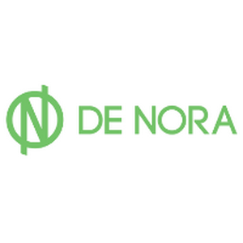

We supply, fabricate, install and provide after sales service of following represented products.


Doors and Hatches
Hi-Point Services (I) Pvt. Ltd., through its sister concern Hi-Point Water Technologies Pvt. Ltd., specializes in the manufacturing of steel doors and hatches for both naval and commercial vessels. These products are designed to meet the rigorous demands of marine environments, ensuring safety, durability, and reliable performance under extreme operating conditions.
The steel doors and hatches are engineered in compliance with relevant marine and defence standards, offering watertight, weathertight, and airtight sealing based on application requirements. Built using high-quality materials and precision manufacturing processes, these systems are capable of withstanding corrosion, pressure variations, and continuous usage in harsh marine conditions.
With strong in-house design and manufacturing capabilities, Hi-Point Water Technologies Pvt. Ltd. delivers customized solutions tailored to vessel-specific needs and space constraints. The company supports the complete lifecycle including design, fabrication, testing, and delivery, ensuring consistent quality and performance. This integrated approach enables Hi-Point to provide robust and dependable access solutions for modern marine and offshore platforms.
Contact Us → Website →